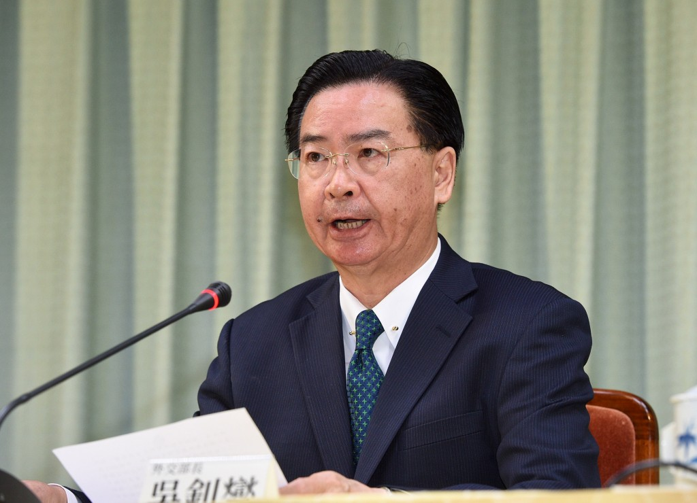

Taiwán se adelanta: Rompe con El Salvador y revela qué le pidió el gobierno
Un periódico local de Taiwán (Taiwán News), informó esta madrugada, que el Ministerio de Relaciones Exteriores (MOFA) dijo el martes que Taiwan romperá las relaciones diplomáticas con El Salvador, después de enterarse de que la nación centroamericana se está preparando para establecer vínculos con China.
En una conferencia de prensa celebrada un día después de que el presidente Tsai Ing-wen regresara de su viaje a América Latina, el canciller Joseph Wu anunció la decisión del gobierno de poner fin a 85 años de relaciones diplomáticas con El Salvador.
Esta es la primera vez que un gobierno taiwanés, hace un anuncio para deshacerse de la relación con un aliado diplomático, antes de que el aliado anunciara oficialmente que cambiaría sus vínculos hacia China continental. Wu dijo que Taiwán también dará por terminados todos los proyectos de cooperación y eliminará la embajada en San Salvador, la capital de El Salvador.
Wu defendió la decisión de su gobierno, diciendo que el partido gobernante de El Salvador (FMLN), había exigido al gobierno de Taiwán que financiara el proyecto de desarrollo del Puerto de La Unión y las elecciones presidenciales programadas para febrero de 2019. El informe del ministro Wu, no aclara si el financiamiento para las elecciones 2019, al que se refiere, serían fondos para el partido FMLN o para que el país cuente con los fondos para la realización de las elecciones presidenciales.
Wu dijo que la cantidad de dinero solicitada por el gobierno salvadoreño era “tremenda” y que el gobierno taiwanés “no estaba dispuesto a dar su consentimiento”.
Con la ruptura de los lazos con El Salvador, Taiwan ha perdido tres aliados en cuatro meses, luego de la ruptura de las relaciones formales con República Dominicana y Burkina Faso. Ahora queda con 17 aliados diplomáticos, incluido el Vaticano.